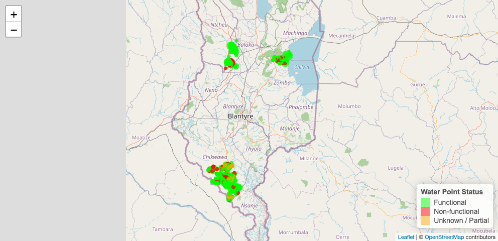

This dataset contains water point assessment data collected during routine field monitoring activities conducted in Malawi in 2023 under the Trocaire water point functionality survey program. The survey was designed to evaluate the operational status, service reliability, and management conditions of rural water supply infrastructure, with a focus on boreholes and community-managed water points.
Data collection was carried out using the mWater platform. The dataset includes geospatial coordinates, functionality status, water availability and reliability indicators, pump and civil works condition, reported mechanical failures, seasonal variability, water quality observations (including salinity and contamination issues), and basic performance metrics such as collection time and access distance.
The dataset also captures governance and service delivery information, including water point committee composition, tariff structures, financial record keeping, maintenance practices, and service provider arrangements.
The survey was conducted across multiple rural water points in Malawi, with locations determined by program implementation and field accessibility.
This dataset can be used for:
Rural water infrastructure functionality analysis
Borehole and handpump performance monitoring
WASH program evaluation and reporting
Geospatial mapping of service delivery gaps
Water quality risk screening (e.g., salinity and contamination indicators)
Governance and sustainability assessments of community-managed water systems
Installation
You can install the development version of waterpointstatus from GitHub with:
# install.packages("devtools")
devtools::install_github("openwashdata/waterpointstatus")
## Run the following code in console if you don't have the packages
## install.packages(c("dplyr", "knitr", "readr", "stringr", "gt", "kableExtra"))
library(dplyr)
library(knitr)
library(readr)
library(stringr)
library(gt)
library(kableExtra)Alternatively, you can download the individual datasets as a CSV or XLSX file from the table below.
- Click Download CSV. A window opens that displays the CSV in your browser.
- Right-click anywhere inside the window and select “Save Page As…”.
- Save the file in a folder of your choice.
| dataset | CSV | XLSX |
|---|---|---|
| waterpointstatus | Download CSV | Download XLSX |
Data
The package provides access to water point assessment data collected during routine field monitoring activities conducted in Malawi in 2023 under the Trocaire water point functionality survey program. The survey was designed to evaluate the operational status, service reliability, and management conditions of rural water supply infrastructure, with a focus on boreholes and community-managed water points.
metadata
The dataset waterpointstatus contains 1365 observations and 45 variables
waterpointstatus |>
head(3) |>
gt::gt() |>
gt::as_raw_html()| waterpoint_id | latitude | longitude | waterpoint_image | functional_status | downtime_duration | abandon_reason | has_current_issue | current_issue | water_available_today | continuous_30days | no_water_30days_reason | repair_duration_days | seasonal_unavailable | seasonal_period | flow_test_possible | fill_time_20l | latrine_within_100m | observed_issues | water_quality_issues | preventive_maintenance | maintenance_barrier | user_population | universal_access | households_no_access | access_barrier | max_roundtrip_minutes | max_distance_metres | has_service_provider | provider_type | has_tariff | tariff_frequency | tariff_amount_mwk | tariff_cost_basis | has_financial_records | has_positive_balance | savings_or_loans | record_balance_mwk | has_bank_account | bank_balance_mwk | committee_year_formed | committee_member_count | committee_women_count | treasurer_gender | months_unavailable |
|---|---|---|---|---|---|---|---|---|---|---|---|---|---|---|---|---|---|---|---|---|---|---|---|---|---|---|---|---|---|---|---|---|---|---|---|---|---|---|---|---|---|---|---|---|
For an overview of the variable names, see the following table.
| variable_name | variable_type | description |
|---|---|---|
| waterpoint_id | numeric | Unique identifier assigned to each water point. |
| latitude | numeric | Geographic latitude of the water point |
| longitude | numeric | Geographic longitude of the water point |
| waterpoint_image | character | File name or reference to image captured during the survey visit. |
| functional_status | character | Operational status of the water point at time of visit |
| downtime_duration | character | Reported length of time the water point has been non-functional or abandoned. |
| abandon_reason | character | Primary reason the water point was abandoned or left non-functional. |
| has_current_issue | character | Indicates whether any current technical or operational problem was observed. |
| current_issue | character | Type of current problem affecting the water point. |
| water_available_today | character | Indicates whether water was available on the day of the visit. |
| continuous_30days | character | Indicates whether the water point provided uninterrupted water supply over the past 30 days. |
| no_water_30days_reason | character | Reason for water interruptions within the last 30 days. |
| repair_duration_days | numeric | Number of days taken to repair the water point after the most recent breakdown |
| seasonal_unavailable | character | Indicates whether the water source becomes unavailable during certain seasons. |
| seasonal_period | character | Time of year when water is typically unavailable due to seasonal variation. |
| flow_test_possible | character | Indicates whether a flow rate test could be conducted during the visit. |
| fill_time_20l | numeric | Time required to fill a 20-litre container during flow rate test. |
| latrine_within_100m | character | Indicates presence of a latrine within 100 metres of the water point. |
| observed_issues | character | General technical or structural problems observed during the visit, multiple responses possible |
| water_quality_issues | character | Observed or reported water quality concerns |
| preventive_maintenance | character | Indicates whether routine preventative maintenance is performed on the water point. |
| maintenance_barrier | character | Main reason preventing regular preventative maintenance. |
| user_population | numeric | Estimated number of people regularly using the water point. |
| universal_access | character | Indicates whether all community members have access to the water point. |
| households_no_access | numeric | Estimated number of households without access to the water point. |
| access_barrier | character | Primary reason some households lack access to the water point. |
| max_roundtrip_minutes | numeric | Maximum reported round-trip time in minutes to collect water. |
| max_distance_metres | numeric | Maximum reported one-way walking distance to the water point. |
| has_service_provider | character | Indicates whether a designated service provider or operator is responsible for the water point. |
| provider_type | character | Type of service provider responsible for operation and maintenance |
| has_tariff | character | Indicates whether users pay a tariff or fee for water access. |
| tariff_frequency | character | Frequency at which the water tariff or user fee is collected. |
| tariff_amount_mwk | numeric | Amount charged per tariff period in Malawi Kwacha |
| tariff_cost_basis | character | Cost factors considered when setting the water tariff |
| has_financial_records | character | Indicates whether financial records or books are maintained for the water point. |
| has_positive_balance | character | Indicates whether financial records show a positive account balance. |
| savings_or_loans | character | Indicates evidence of savings accumulation or loan repayment in financial records. |
| record_balance_mwk | numeric | Reported balance recorded in financial books |
| has_bank_account | character | Indicates whether the service provider maintains a formal bank account. |
| bank_balance_mwk | numeric | Reported balance held in the bank account |
| committee_year_formed | numeric | Year the water point committee was established. |
| committee_member_count | numeric | Total number of members serving on the water point committee. |
| committee_women_count | numeric | Number of women serving on the water point committee. |
| treasurer_gender | character | Gender of the committee treasurer. |
| months_unavailable | numeric | Total number of months per year the water source is unavailable. |
Example
library(waterpointstatus)
# Example 1: Visualization Map on water point status
library(leaflet)
library(dplyr)
library(stringr)
# -----------------------------
# 1. Data preparation
# -----------------------------
wp_map <- waterpointstatus %>%
mutate(
latitude = as.numeric(latitude),
longitude = as.numeric(longitude),
# Clean functional status (real-world messy labels handled)
functional_status = case_when(
str_detect(tolower(functional_status), "functional") &
!str_detect(tolower(functional_status), "not|non") ~ "Functional",
str_detect(tolower(functional_status), "not|non") ~ "Non-functional",
TRUE ~ "Unknown / Partial"
),
# Population
user_population = as.numeric(user_population),
# Scale for visualization
pop_scaled = sqrt(user_population)
) %>%
filter(!is.na(latitude), !is.na(longitude))
# -----------------------------
# 2. Color palette
# -----------------------------
status_palette <- colorFactor(
palette = c(
"Functional" = "green",
"Non-functional" = "red",
"Unknown / Partial" = "orange"
),
domain = wp_map$functional_status
)
# -----------------------------
# 3. Leaflet map
# -----------------------------
leaflet(wp_map) %>%
addProviderTiles(providers$OpenStreetMap) %>%
addCircleMarkers(
lng = ~longitude,
lat = ~latitude,
color = ~status_palette(functional_status),
fillColor = ~status_palette(functional_status),
fillOpacity = 0.75,
stroke = TRUE,
weight = 1,
radius = ~ifelse(is.na(pop_scaled), 4, pop_scaled / 6),
popup = ~paste0(
"<b>Water Point ID:</b> ", waterpoint_id, "<br>",
"<b>Status:</b> ", functional_status, "<br>",
"<b>User population:</b> ", ifelse(is.na(user_population), "NA", user_population), "<br>",
"<b>Fill time (20L):</b> ", ifelse(is.na(fill_time_20l), "NA", fill_time_20l), "<br>",
"<b>Repair days:</b> ", ifelse(is.na(repair_duration_days), "NA", repair_duration_days), "<br>",
"<b>Latrine within 100m:</b> ", latrine_within_100m
)
) %>%
addLegend(
position = "bottomright",
pal = status_palette,
values = ~functional_status,
title = "Water Point Status"
)
License
Data are available as CC-BY.
Citation
Published by openwashdata, https://openwashdata.org.
Please cite this package using:
citation("waterpointstatus")
#> To cite package 'waterpointstatus' in publications use:
#>
#> Mhango E (2026). "waterpointstatus: Water Point Functionality and
#> Service Monitoring, Malawi 2023." doi:10.5281/zenodo.19498016
#> <https://doi.org/10.5281/zenodo.19498016>.
#> <https://github.com/openwashdata/waterpointstatus>.
#>
#> A BibTeX entry for LaTeX users is
#>
#> @Misc{mhango:2026,
#> title = {waterpointstatus: Water Point Functionality and Service Monitoring, Malawi 2023},
#> author = {Emmanuel Mhango},
#> year = {2026},
#> doi = {10.5281/zenodo.19498016},
#> url = {https://github.com/openwashdata/waterpointstatus},
#> abstract = {This dataset contains structured field survey responses collected from water point inspections and interviews with community members or water point committee representatives. Each record represents a single survey event linked to a specific water point, including GPS coordinates and detailed observations on infrastructure condition, functionality, water availability, maintenance practices, and governance arrangements.},
#> keywords = {open data,washdata,water points,functionality,water supply,service delivery,Malawi,baseflow,boreholes,groundwater,wash,waterpoints},
#> version = {1.0.0},
#> }